İskelet Asker
1. turdan itibarenKemikten kılıç taşıyan bir iskelet. Yavaştır ama en dayanıklısıdır.
- Can
- 40
- Saldırı Hızı
- saniyede 0,8
- Menzil
- 1 kare
Düşmanlar üç kapıdan gruplar hâlinde akın eder. Turlar ilerledikçe çoğalır ve güçlenirler.
Kemikten kılıç taşıyan bir iskelet. Yavaştır ama en dayanıklısıdır.
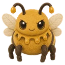
Yavaş ve yumuşaktır. Düşünce 2 küçük balçığa bölünür.
Hedefine değer değmez 1 kare mesafe içinde patlar; vurduğu peluşlar 3 sn boyunca Yanma etkisinde kalır.
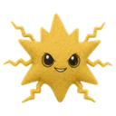
Uzaktan attığı elektrik 2 kare mesafe içindeki diğer peluşlara sıçrar ve toplam 3 hedefe kadar vurur; vurduğu peluşlar 3 sn boyunca şokta kalır.
Uzaktan zehir tükürür; vurduğu peluşlar 3 sn boyunca zehirlenir.
Hedefinin önünde durur, 3 sn sayar ve 1 kare mesafe içinde patlar. Sayarken onu düşürürsen patlamaz.
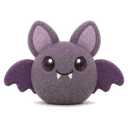
Sert kabuklu bir yengeç. Yakından dövüşür ve zırhı yüksektir.
Süzülen bir denizanası. İğnesi 1 kare mesafe içindeki başka bir peluşa sıçrar ve toplam 2 hedefe kadar vurur; vurduğu peluşlar 3 sn boyunca şokta kalır.
Bir bataklık kurbağası. Hızla zıplayarak gelir ve yakından dövüşür; vurduğu peluşlar 3 sn boyunca zehirlenir.
Bir çöl akrebi. Yakından sokar; vurduğu peluşlar 3 sn boyunca zehirlenir.
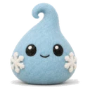
Süzülen bir kırağı ruhu. Uzaktan kırağı atar; vurduğu peluşlar 3 sn boyunca Kırağılı olur ve saldırı hızları 20% düşer.
Gökyüzünün fırtına bulutu. Uzaktan attığı yıldırım 2 kare mesafe içindeki başka bir peluşa sıçrar ve toplam 2 hedefe kadar vurur; vurduğu peluşlar 3 sn boyunca şokta kalır.
Yavaş bir kardan adam. Yakından dövüşür; vurduğu peluşlar 3 sn boyunca Kırağılı olur ve saldırı hızları 20% düşer.
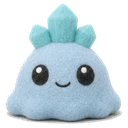
Buzdan bir balçık. Yavaş ve biraz sağlamdır. Düşünce 2 küçük buz balçığına bölünür.
Kızgın lavdan bir balçık. Yavaştır; düşünce 2 Köze bölünür.
Fabrikanın kurmalı askeri. Yakından dövüşür; zırhı yüksektir.
Yuvarlanan bir dişli. Hızla yuvarlanarak gelir ve yakından dövüşür; biraz zırhı vardır.
Közden yavaş ve sert bir göktaşı. Hedefine değer değmez 1 kare mesafe içinde sertçe patlar; vurduğu peluşlar 3 sn boyunca Yanma etkisinde kalır.
Kütüphanenin büyü kitabı. Uzaktan büyü yapar; büyü direnci yüksektir.
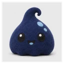
Mürekkepten bir damla. Yavaş ve yumuşaktır. Düşünce 2 küçük mürekkep damlasına bölünür.
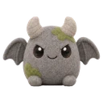
Taştan bir gargoyl. Yakından dövüşür; zırhı da büyü direnci de yüksektir.
Kendisi ve 2 kare içindeki dostlar: her 2 sn +%4 Can
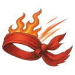
Kaybedilen her %1 can için Saldırı Hızı +%1 · en çok +%100
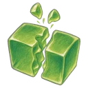
Düşünce aynı peluştan 3 tane çıkar · güç 35% · boyut 30% azalır · patron ancak onlar da düşünce yenilir
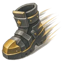
Yalnızca kaleye gider · yolunu kesenlerin etrafından dolaşır · Hareket Hızı 50% artar
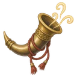
Her 6 sn'de bir yanına aynı peluştan 2 tane çağırır · güç 20%
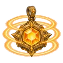
Etki alanı +2 kare
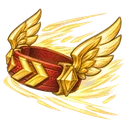
Hareket Hızı %100 artar · Saldırı Hızı %50 artar
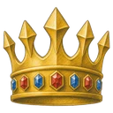
Diğer peluşların Saldırı Gücü %20 artar · Saldırı Hızı %20 artar
Kalbi ayaktayken düşmez · kalbin Canı, patron Canının 30% oranındadır
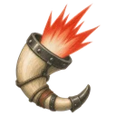
Düşünce kalan düşmanlara +80% Saldırı Hızı